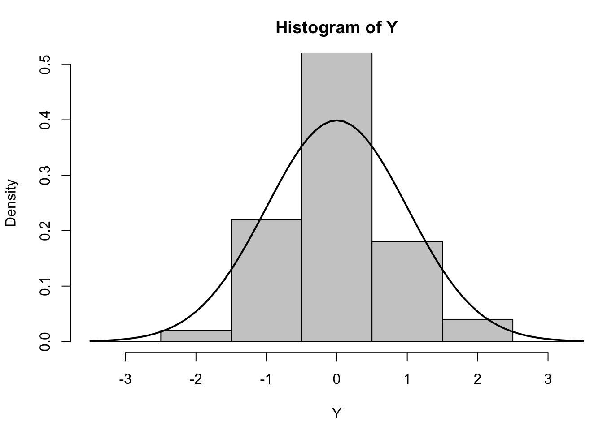
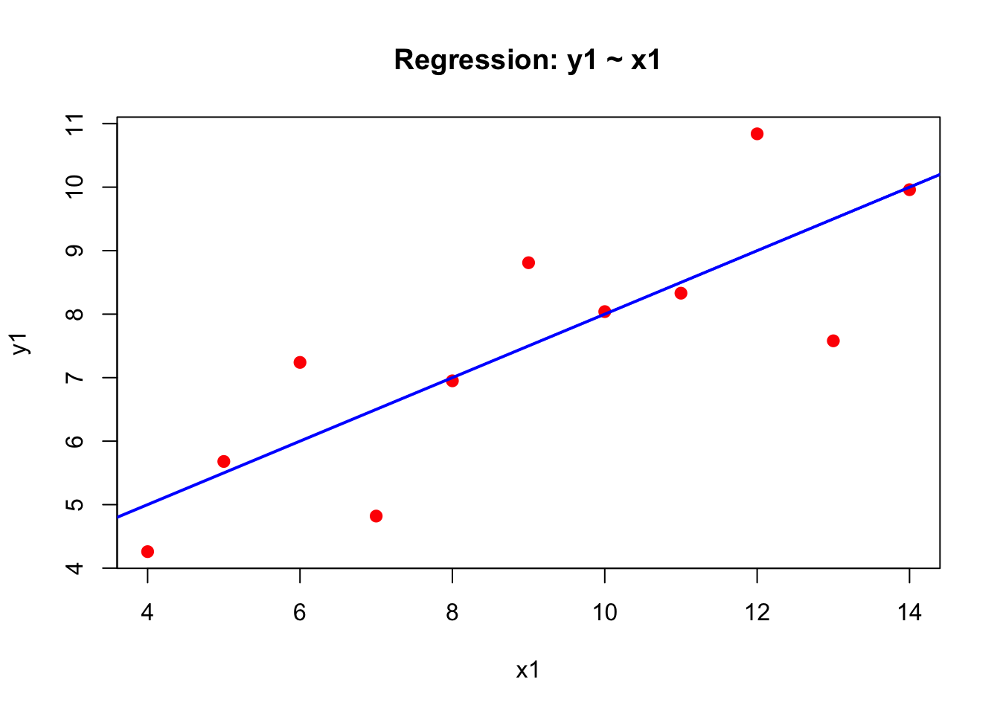
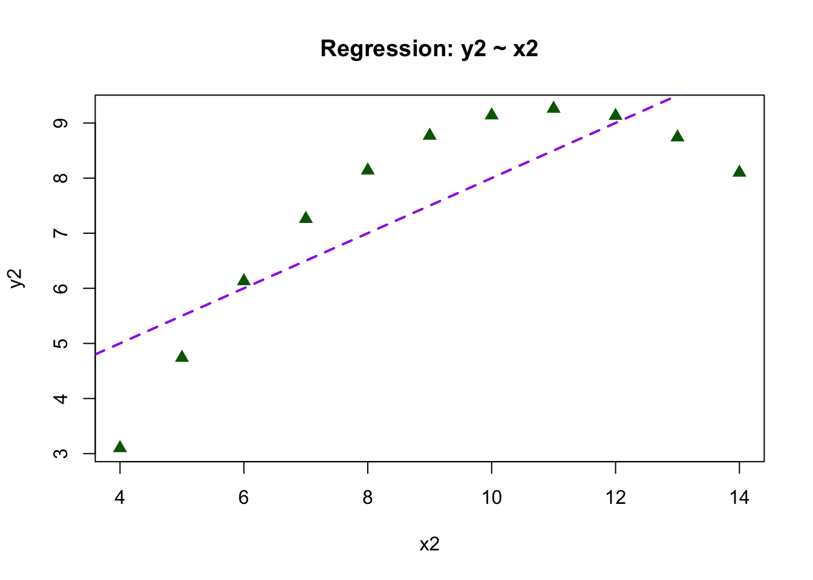
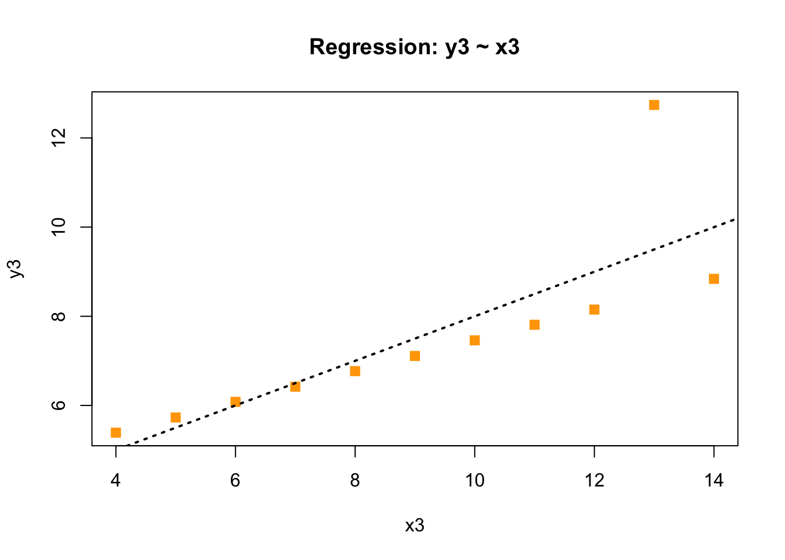
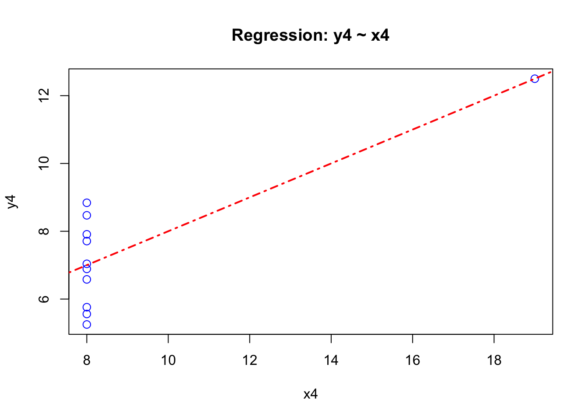
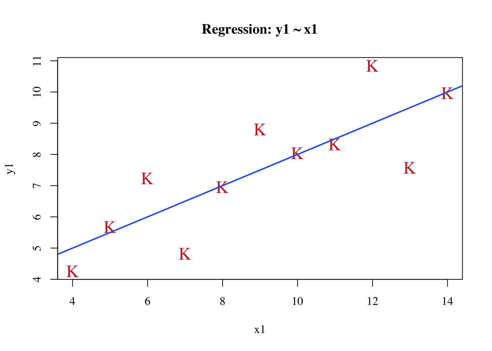
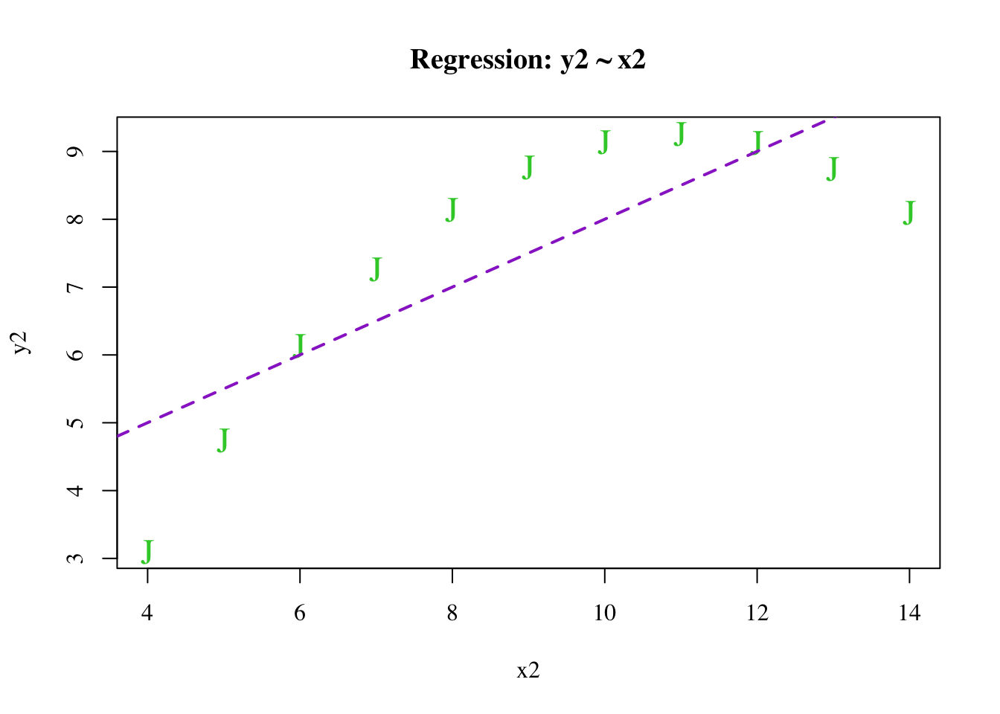
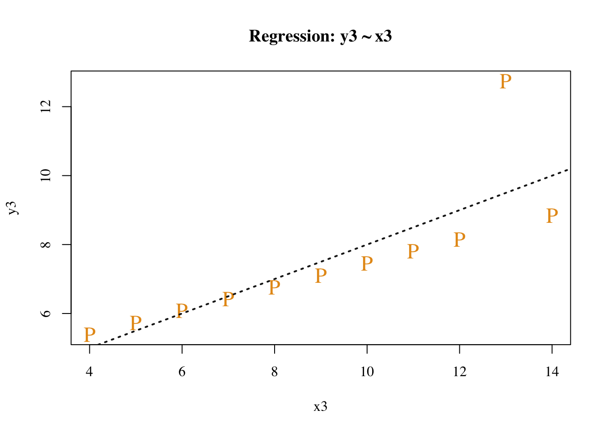
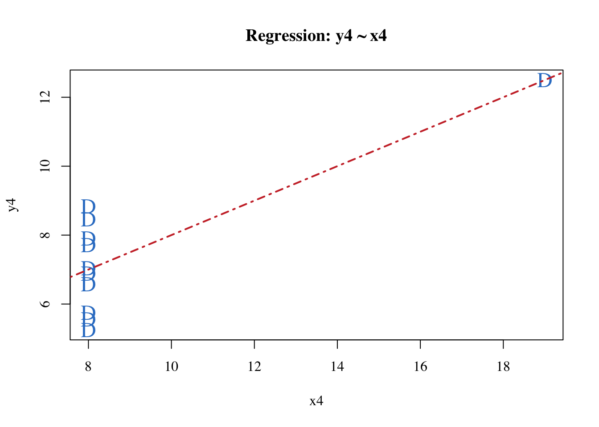
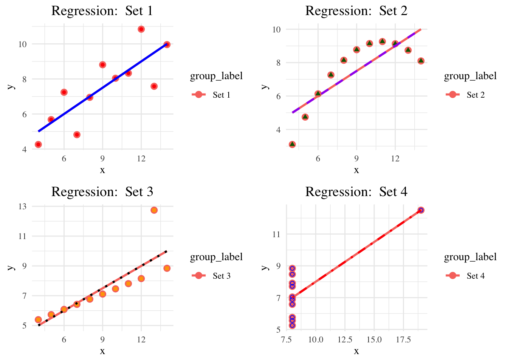

### Paul Murrell's R examples (selected)# Histogram# Random dataY <-rnorm(50)# Make sure no Y exceed [-3.5, 3.5]Y[Y <-3.5| Y >3.5] <-NA# Selection/set rangex <-seq(-3.5, 3.5, .1)dn <-dnorm(x)par(mar=c(4.5, 4.1, 3.1, 0))hist(Y, breaks=seq(-3.5, 3.5), ylim=c(0, 0.5), col="gray80", freq=FALSE)lines(x, dnorm(x), lwd=2)

par(mar=c(5.1, 4.1, 4.1, 2.1))
I have chosen to explain the code of histogram
Generates 50 Random variables that are normally distributed
Y <- rnorm(50)
Replace values in Y that are less than -3.5 or greater than 3.5 by NA
Y[Y < -3.5 | Y > 3.5] <- NA
Create a sequence from -3.5 to 3.5 with an increment of 0.1
x <- seq(-3.5, 3.5, .1)
Calculate the normal density at each value of X
dn <- dnorm(x)
Set the margins of the plot by the values give in the C(bottom, left, top , right)
par(mar=c(4.5, 4.1, 3.1, 0))
Create a histogram of Y, setting the breaks from -3.5 to 3.5, setting y-axis limits from 0 to 0.5, using a gray color,and setting it to display density rather than frequency (freq=FALSE)
In this plot the points seem to be independently and identically distributed across the regression line and the regression line seems to fit the points pretty well. The errors (difference between points and regression line) also seem to be normally distributed. Thus this model meets the assumption of a liner regression so we can trust the results of the regression output .i.e. slope paramerters, t-stat and so on
Plot of Y2 Vs X2
In this plot the points do not seem to be independently and identically distributed across the regression line and the regression line doesnot fit the points pretty well. The errors (difference between points and regression line) also does not seem to be normally distributed. Thus this model does not meets the assumption of a liner regression very well. The errors seem to be serially corellated and may be a different curvilinear model can fit the data very well. So, we cannot trust the results of the regression output .i.e. slope paramerters, t-stat and so on
Plot of Y3 vs X3
In this model there is an outlier which will skew the regression output, also it has all the problems we discussed for Y2 Vs X2 as points are not evenly distributed above and below the line. Thus the regression assumptions are violated and we cannot trust the model results.
Plot of Y4 Vs X4
In this model all the points are concentrated at X=8 and there is an outllier at X=19 so all the regression assumptions are violated and may be a different model is appropriate for this data.
Comparing different ways to create plots
data(anscombe)# Create four linear modelslm1 <-lm(y1 ~ x1, data=anscombe)lm2 <-lm(y2 ~ x2, data=anscombe)lm3 <-lm(y3 ~ x3, data=anscombe)lm4 <-lm(y4 ~ x4, data=anscombe)# Plot 1: Red points with a blue solid lineplot(anscombe$x1, anscombe$y1, main="Regression: y1 ~ x1", xlab="x1", ylab="y1", pch=16, col="red", cex=1.2) # Red points with filled circlesabline(lm1, col="blue", lty=1, lwd=2) # Blue solid line

# Plot 2: Green points with a purple dashed lineplot(anscombe$x2, anscombe$y2, main="Regression: y2 ~ x2", xlab="x2", ylab="y2", pch=17, col="darkgreen", cex=1.2) # Green points with trianglesabline(lm2, col="purple", lty=2, lwd=2) # Purple dashed line

# Plot 3: Orange points with a black dotted lineplot(anscombe$x3, anscombe$y3, main="Regression: y3 ~ x3", xlab="x3", ylab="y3", pch=15, col="orange", cex=1.2) # Orange points with squaresabline(lm3, col="black", lty=3, lwd=2) # Black dotted line

# Plot 4: Blue open circles with a red dot-dash lineplot(anscombe$x4, anscombe$y4, main="Regression: y4 ~ x4", xlab="x4", ylab="y4", pch=1, col="blue", cex=1.2) # Blue open circlesabline(lm4, col="red", lty=4, lwd=2) # Red dot-dash line

By making a few changes in plot and abvline function we can create different plots using different color and shape and size using col, pch and cex parameters. Furthermore the lty and lwd parameters decide dash or dotted lines.
Plot of Y1 vs X1
Here, the regression line is of blue color and dots are red.
Plot of Y2 vs X2
Here, the regression line is dashed purple color and dots are green rectangels.
Plot of Y3 vs X3
Here, the regression line is black dotted color and dots are orange squares.
Plot of Y4 vs X4
Here, the regression line red dash dot and dots are blue hollow circles.
Fine tuning the charts using serif font, non-default color and own plotting character
# Load the Anscombe datasetdata(anscombe)# Create four linear modelslm1 <-lm(y1 ~ x1, data=anscombe)lm2 <-lm(y2 ~ x2, data=anscombe)lm3 <-lm(y3 ~ x3, data=anscombe)lm4 <-lm(y4 ~ x4, data=anscombe)# Plot 1: Custom plot with serif font, custom color, and plotting character "K"plot(anscombe$x1, anscombe$y1, main="Regression: y1 ~ x1", xlab="x1", ylab="y1", pch="K", col=rgb(0.8, 0.2, 0.2), cex=1.5, family="serif") # Custom red and "A" as point symbolabline(lm1, col=rgb(0.2, 0.4, 0.9), lty=1, lwd=2) # Custom blue solid line

# Plot 2: Custom plot with serif font, different color, and plotting character "J"plot(anscombe$x2, anscombe$y2, main="Regression: y2 ~ x2", xlab="x2", ylab="y2", pch="J", col=rgb(0.2, 0.8, 0.2), cex=1.5, family="serif") # Custom green and "B" as point symbolabline(lm2, col=rgb(0.6, 0.2, 0.8), lty=2, lwd=2) # Custom purple dashed line

# Plot 3: Custom plot with serif font, another color, and plotting character "P"plot(anscombe$x3, anscombe$y3, main="Regression: y3 ~ x3", xlab="x3", ylab="y3", pch="P", col=rgb(0.9, 0.6, 0.1), cex=1.5, family="serif") # Custom orange and "C" as point symbolabline(lm3, col=rgb(0.1, 0.1, 0.1), lty=3, lwd=2) # Custom black dotted line

# Plot 4: Custom plot with serif font, different color, and plotting character "D"plot(anscombe$x4, anscombe$y4, main="Regression: y4 ~ x4", xlab="x4", ylab="y4", pch="D", col=rgb(0.2, 0.5, 0.8), cex=1.5, family="serif") # Custom blue and "D" as point symbolabline(lm4, col=rgb(0.8, 0.2, 0.2), lty=4, lwd=2) # Custom red dot-dash line

In the above charts using rgb() function different combination of colors for line and letter can be created, furthemore by family=“serif” converts the font to serif and pch plots the characters K, J, P, D.
Using ggplot2
# Load necessary librarylibrary(ggplot2)# Reshape the Anscombe data for ggplot2 (long format)anscombe_long <-data.frame(x =c(anscombe$x1, anscombe$x2, anscombe$x3, anscombe$x4),y =c(anscombe$y1, anscombe$y2, anscombe$y3, anscombe$y4),group =rep(c("Set 1", "Set 2", "Set 3", "Set 4"), each =nrow(anscombe)))# Define a plot function to customize each plotgg_anscombe <-function(data, group_label) {ggplot(data, aes(x = x, y = y)) +geom_point(aes(color = group_label), size =3, shape =16) +geom_smooth(method ="lm", se =FALSE, aes(color = group_label), size =1) +labs(title =paste("Regression: ", group_label), x ="x", y ="y") +theme_minimal(base_family ="serif") +# Set font to seriftheme(plot.title =element_text(hjust =0.5, size =14)) # Center the title}# Plot 1p1 <-gg_anscombe(anscombe_long[anscombe_long$group =="Set 1", ], "Set 1") +geom_point(color ="red", shape =16) +# Red points, filled circlesgeom_smooth(method ="lm", se =FALSE, color ="blue", linetype =1) # Blue solid line
Warning: Using `size` aesthetic for lines was deprecated in ggplot2 3.4.0.
ℹ Please use `linewidth` instead.
# Plot 2p2 <-gg_anscombe(anscombe_long[anscombe_long$group =="Set 2", ], "Set 2") +geom_point(color ="darkgreen", shape =17) +# Green points, trianglesgeom_smooth(method ="lm", se =FALSE, color ="purple", linetype =2) # Purple dashed line# Plot 3p3 <-gg_anscombe(anscombe_long[anscombe_long$group =="Set 3", ], "Set 3") +geom_point(color ="orange", shape =15) +# Orange points, squaresgeom_smooth(method ="lm", se =FALSE, color ="black", linetype =3) # Black dotted line# Plot 4p4 <-gg_anscombe(anscombe_long[anscombe_long$group =="Set 4", ], "Set 4") +geom_point(color ="blue", shape =1) +# Blue open circlesgeom_smooth(method ="lm", se =FALSE, color ="red", linetype =4) # Red dot-dash line# Arrange the four plots into a gridlibrary(gridExtra)grid.arrange(p1, p2, p3, p4, nrow =2)
`geom_smooth()` using formula = 'y ~ x'
`geom_smooth()` using formula = 'y ~ x'
`geom_smooth()` using formula = 'y ~ x'
`geom_smooth()` using formula = 'y ~ x'
`geom_smooth()` using formula = 'y ~ x'
`geom_smooth()` using formula = 'y ~ x'
`geom_smooth()` using formula = 'y ~ x'
`geom_smooth()` using formula = 'y ~ x'

Here, I have used ggplot2 package and converted x and y values in a dataframe and into 4 sets. A plot function created a customized plot for each of the models where a function reduces the need to call the ggplot2() method again and again. Furthermore, the plots are arranged in a grid like structure so we can save some space.